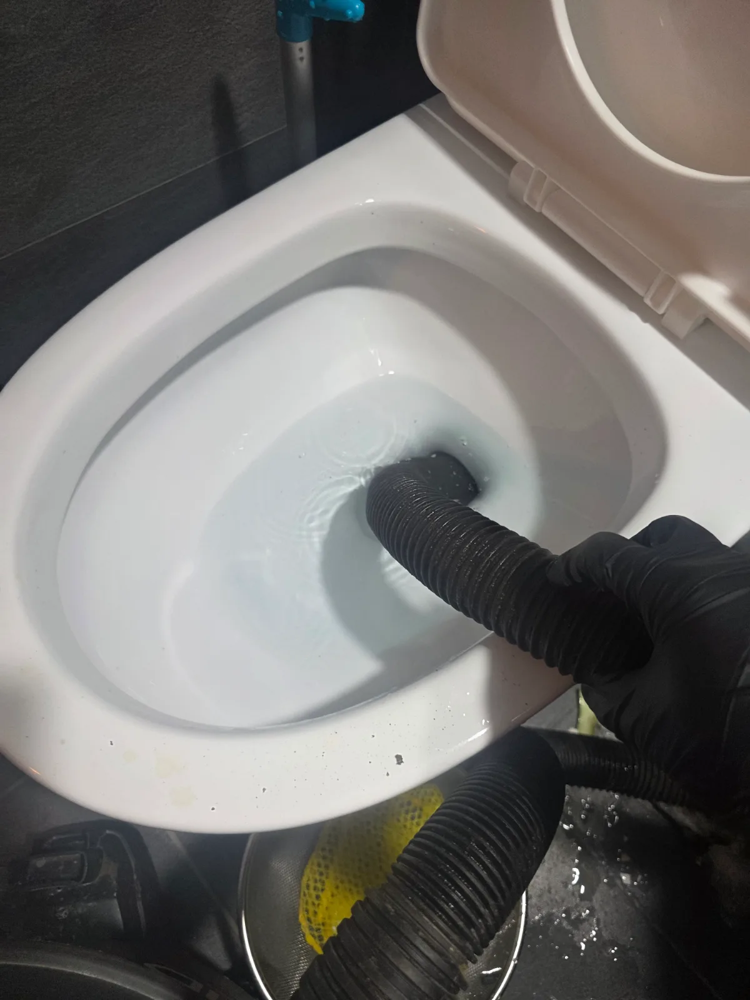
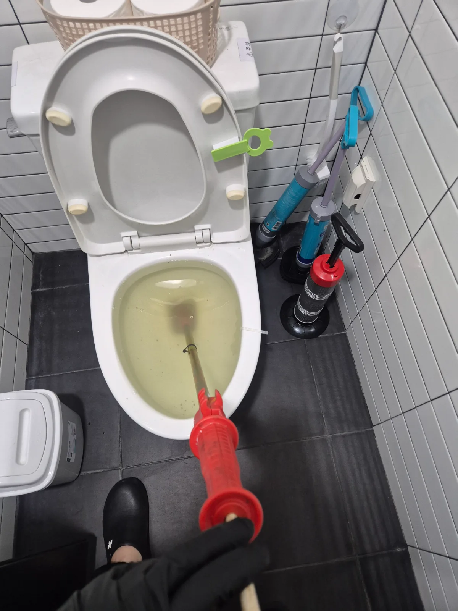
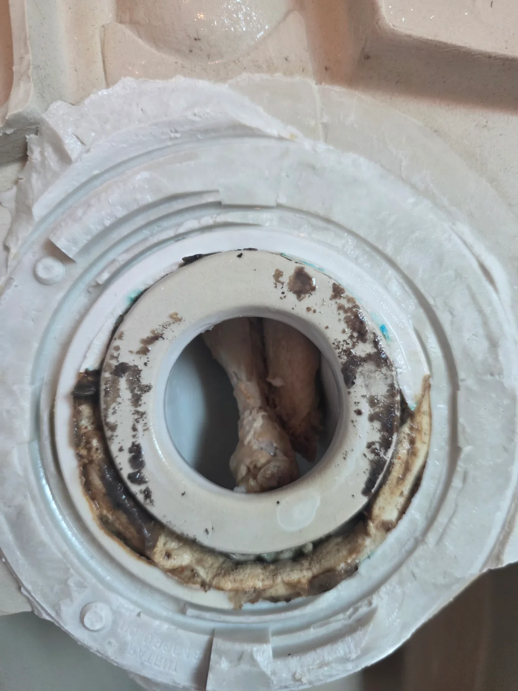
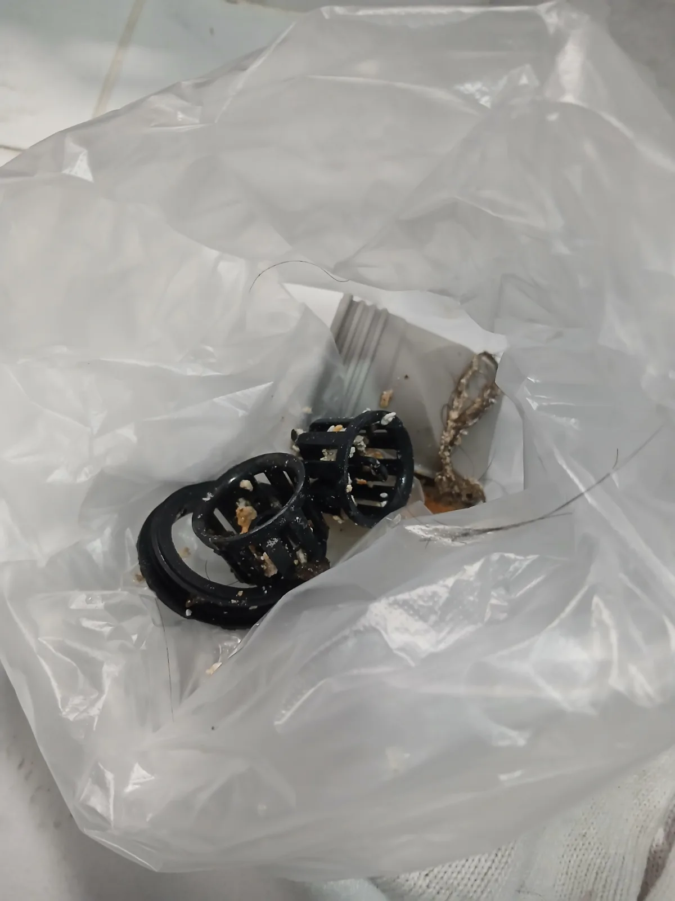
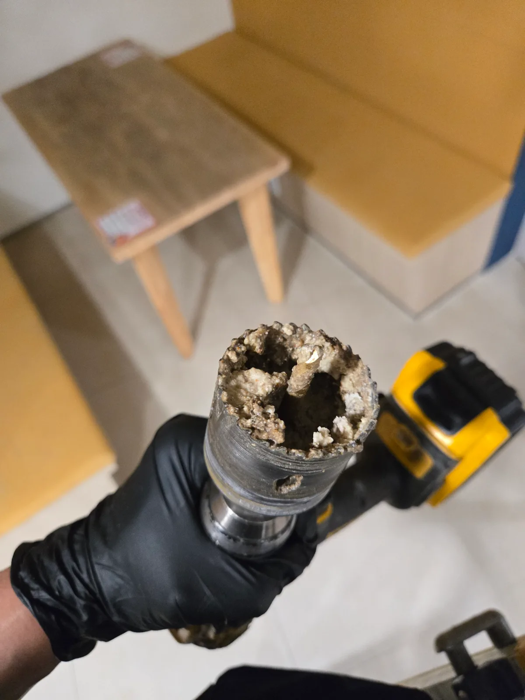
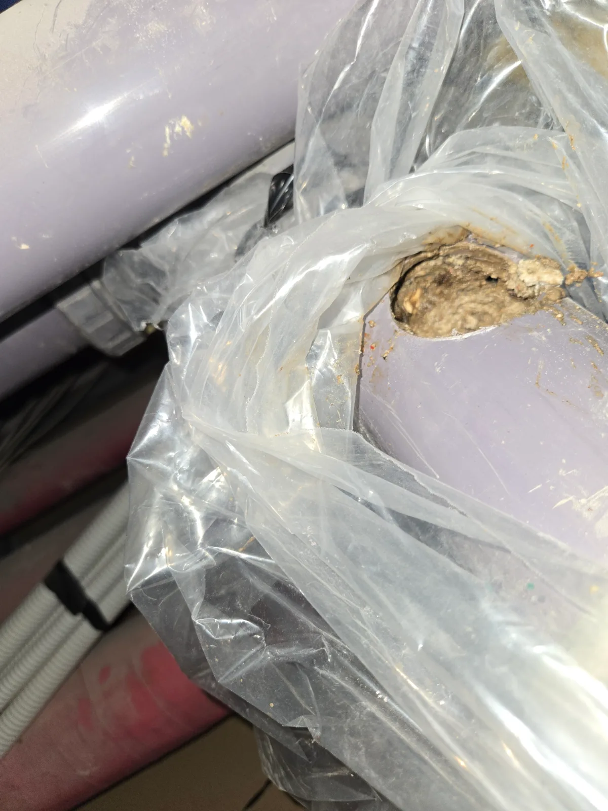
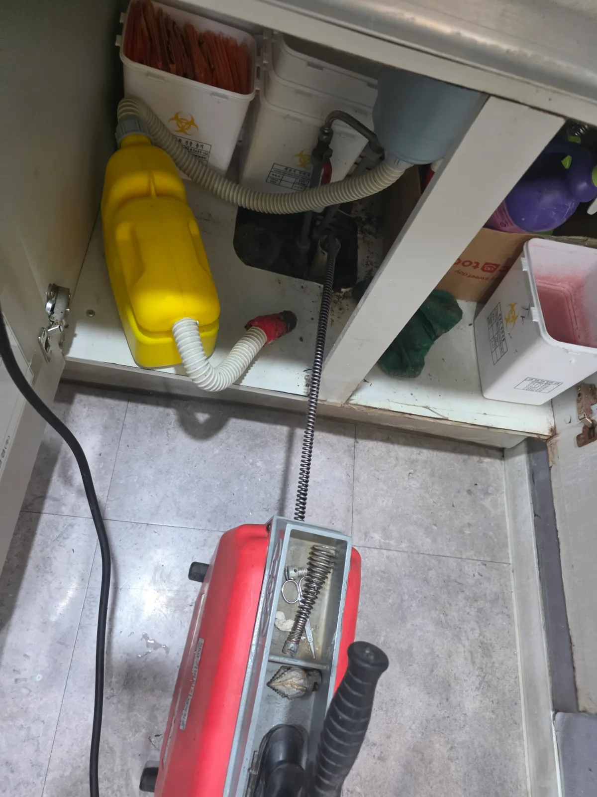

강남구 역삼동 변기막힘 | 관통기로 안 뚫린 이유 석션으로 야채류 이물질 제거
강남구 역삼동 변기막힘 현장에서 관통기를 먼저 사용했지만 막힘이 해소되지 않아 석션 작업으로 전환했고 변기 내부에 남아 있던 다량의 야채류
서울 · 강남구
신라건축설비가 강남구에서 직접 진단하고 해결한 실제 작업 기록입니다.

강남구 역삼동 변기막힘 현장에서 관통기를 먼저 사용했지만 막힘이 해소되지 않아 석션 작업으로 전환했고 변기 내부에 남아 있던 다량의 야채류

강남구 대치동 변기막힘 빌딩 화장실에서 변기 내부에 단단히 뭉친 이물질로 발생한 막힘을 해결했습니다 관통 작업을 반복해 막힌 부분을 충분히

강남구 역삼동 변기막힘 석션과 관통기로 해결되지 않던 변기를 탈거해 하부 연결부에 걸린 닭다리와 닭날개를 발견했습니다 이물질을 직접 꺼내고

압구정동 고급빌라 싱크대 물이 잘 빠지지 않아 확인했습니다. 입구의 이물질을 먼저 제거한 뒤 내부 오염을 확인하고 배수 통로를 정리했습니다.

강남구 대치동 싱크대막힘 오래된 아파트 싱크대막힘 현장에 출동해 배관 내시경으로 내부 상태와 막힘 구간을 점검하고 RIDGID K9 102

역삼동에서 싱크대 물을 틀자 바닥 배수구로 오수가 역류했습니다. 입구에 쌓인 갈색 기름때와 이물질을 제거하고 배관 안쪽을 정리한 뒤 정상 배수를 확인했습니다.

서울 강남구 개포동 싱크대막힘 신라건축설비가 개포동 싱크대 하부 배관을 내시경으로 점검하고 샤프트로 내부 축적물을 제거한 뒤 고압세척과 내시경

강남구 신사동 하수구막힘 에어비앤비 입실 전 욕실 배수구 트랩과 배관을 점검하고 석션으로 이물질 제거 후 통수 확인

강남구 신사동 하수구막힘 욕실 배관을 내시경으로 확인하고 샤프트로 이물질을 분리한 뒤 석션으로 회수 및 통수 확인

강남구 대치동 하수구막힘 오래된 주철배관을 부분 타공해 굳은 기름때를 제거하고 주요 구간을 점검한 뒤 통수 확인

강남구 삼성동 하수구막힘 관공서 천장 하수배관을 부분 타공해 굳은 이물질을 제거하고 통수검사 후 타공부 보수

강남구 역삼동 하수구막힘 병원 배수구를 스프링으로 먼저 관통한 뒤 고압세척으로 잔여 이물질을 제거하고 배수 확인